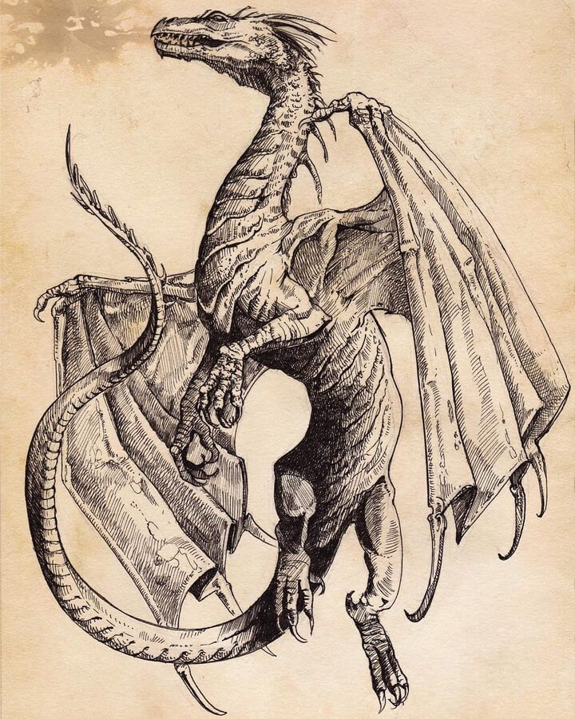
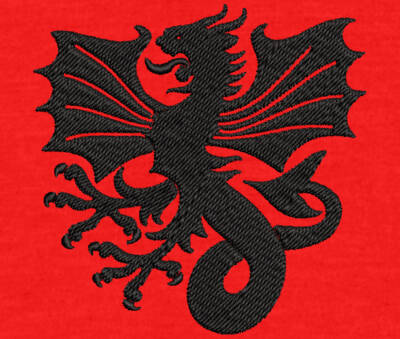

Le mot dragon vient du latin draco, lui-même issu du grec ancien *drákōn*, qui signifiait à l'origine grand serpent ou serpent mythique.
La racine grecque est liée à l'idée de regard perçant, ce qui explique que les dragons soient souvent décrits comme des créatures qui gardent ou surveillent quelque chose, comme un trésor ou un lieu sacré.
Les premières représentations de dragons apparaissent dans les mythes très anciens du Proche-Orient et de la Grèce antique, il y a plus de 2500 ans, où ils sont souvent représentés comme de grands serpents monstrueux.
Leur signification varie selon les cultures : en Europe, surtout au Moyen Âge, le dragon symbolise souvent le danger, le mal et l'ennemi que le héros doit vaincre. En revanche, dans les cultures asiatiques, notamment en Chine, il représente la puissance, la sagesse, la chance et les forces de la nature comme la pluie et les rivières.
Ainsi, même s’il est imaginaire, le dragon est une figure très importante dans de nombreuses civilisations et traditions.
Encyclopaedia Universalis — article Dragon
Wikipédia — Dragon ; Dragons dans la mythologie grecque
Dictionnaire Orthodidacte — Étymologie du mot dragon]
· ⟨ 🔥 ⟩ ·
La vision du dragon varie radicalement selon les civilisations : tantôt monstre destructeur,
tantôt divinité bienveillante. Voici quelques grandes traditions.
🇨🇳 Chine
Symbole de puissance, de chance et de prospérité. Le dragon chinois est bienveillant,
associé à l'eau et aux empereurs.
🐉 Europe médiévale
Créature maléfique crachant le feu, souvent tué par un chevalier. Il garde des trésors
et symbolise le mal à vaincre.
🇯🇵 Japon
Ryū : serpent aquatique et protecteur, lié à la mer et aux tempêtes.
Souvent représenté sans ailes.
⚡ Norrois
Níðhöggr ronge les racines d'Yggdrasil. Le dragon nordique incarne le chaos et la destruction.
🏔️ Mésoamérique
Quetzalcóatl, le serpent à plumes, est un dieu créateur chez les Aztèques, proche du dragon.
· ⟨ 🔥 ⟩ ·
Le dragon est représenté comme une créature monstrueuse et dangereuse. Il est souvent décrit comme un grand reptile avec des écailles, des griffes et parfois des ailes.
Il symbolise une menace pour les humains et apparaît généralement comme un ennemi que le héros doit combattre.
Dans ces représentations, le dragon symbolise le danger, le mal ou les forces destructrices.
Il représente souvent un obstacle que le héros doit vaincre.
Le combat contre le dragon symbolise donc la lutte entre le bien et le mal.
Cette représentation s’explique par l’influence de la religion chrétienne au Moyen Âge. Dans la tradition chrétienne, le dragon est souvent associé au diable ou aux forces du mal.
Dans la Bible, il peut représenter Satan.
Les récits où un saint ou un chevalier tue un dragon symbolisent donc la victoire de la foi chrétienne et du bien sur le mal.

Fresque médiévale – le dragon comme symbole du mal.

Blasons & Armoiries – protection et puissance.
Dragon asiatique – sagesse et fortune.
· ⟨ 🔥 ⟩ ·
Dans la plupart des représentations, le dragon ressemble à un gigantesque reptile.
Son corps est recouvert d’écailles très résistantes qui lui servent de protection.
Beaucoup de dragons possèdent aussi de grandes ailes semblables à celles des chauves-souris, ce qui leur permettrait de voler.
Ils sont souvent représentés avec de longues griffes, des dents acérées et parfois la capacité de cracher du feu.
Si le dragon était une véritable espèce animale, il devrait posséder une ossature extrêmement solide et des muscles très puissants pour supporter son poids et pouvoir voler.
🔥 Souffle de feu
❄️ Souffle de glace
⚡ Foudre
🦅 Vol
🛡️ Écailles invulnérables
🧠 Intelligence supérieure
✨ Magie
👁️ Vision nocturne
💨 Venin
🔮 Télékinésie
♾️ Immortalité (selon les mythes)
· ⟨ 🔥 ⟩ ·
Des grands écrans aux pages des romans, les dragons n'ont jamais cessé de fasciner les créateurs.
Ils sont devenus des icônes incontournables de la fantasy moderne, apparaissant dans des œuvres
qui ont marqué des générations entières.
· ⟨ 🔥 ⟩ ·
Le dragon est bien plus qu'un simple monstre de fiction. Présent sur tous les continents
et à travers toutes les époques, il incarne nos peurs les plus profondes mais aussi nos
rêves les plus grands : la puissance, la liberté, la sagesse.
Qu'il soit un gardien de trésor ou un symbole divers, le dragon continue de nous inspirer
et de nous fasciner, prouvant que même les créatures les plus mythiques peuvent avoir une place dans notre imaginaire collectif.
« Le dragon ne se soumet pas, il nous enseigne à nous dépasser. »
[ WASSIM - BTS SIO 2 - 2024/2026 ]